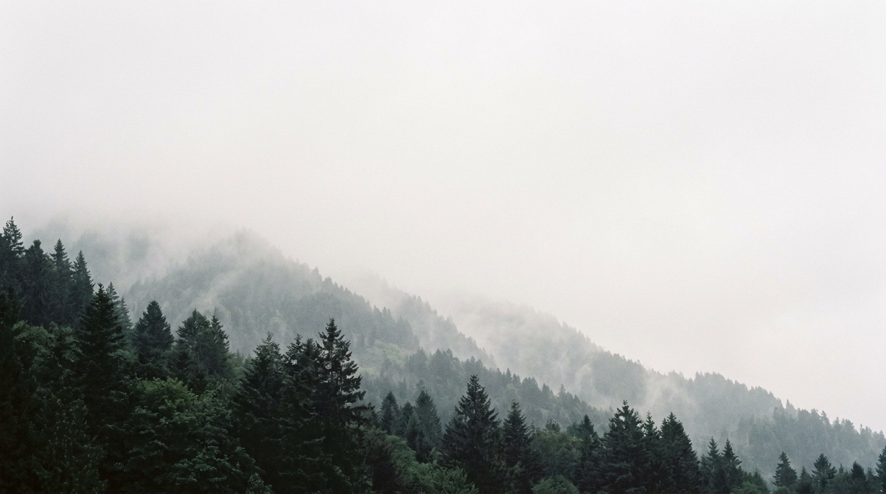
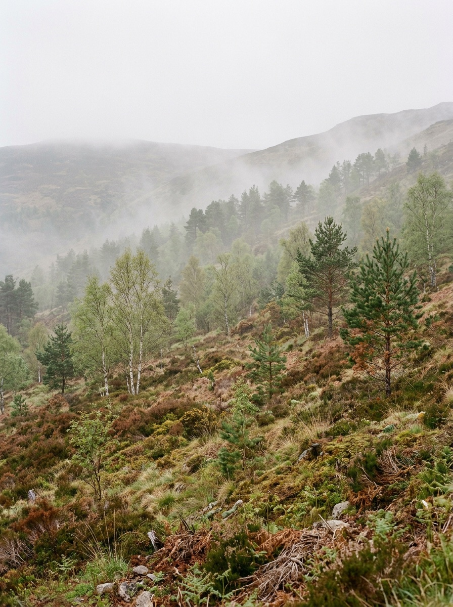
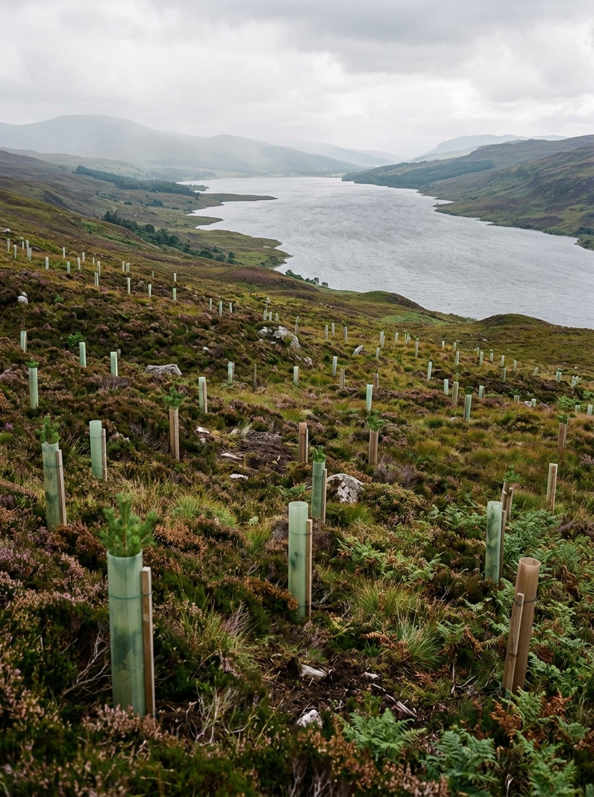
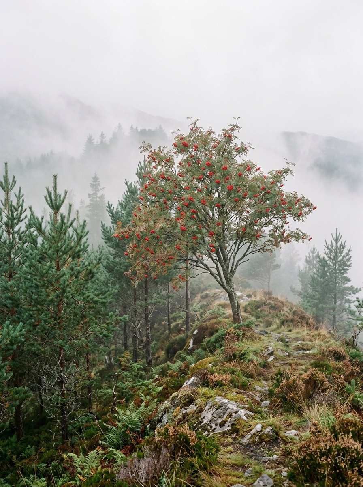
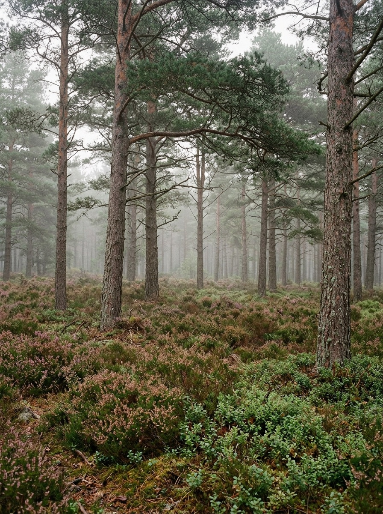
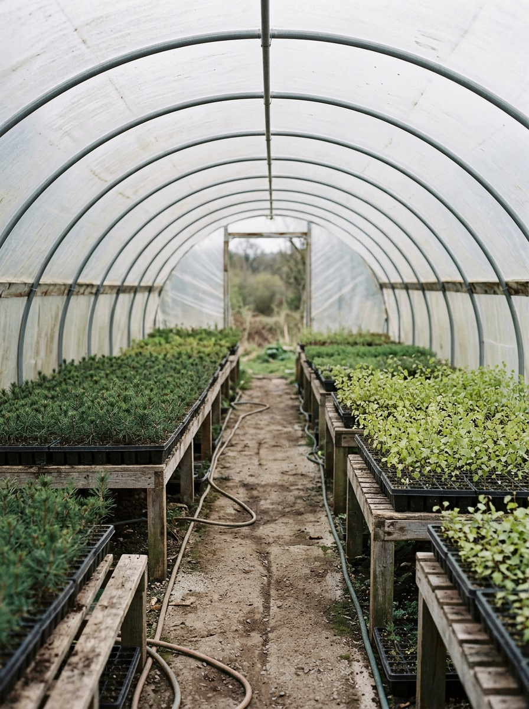
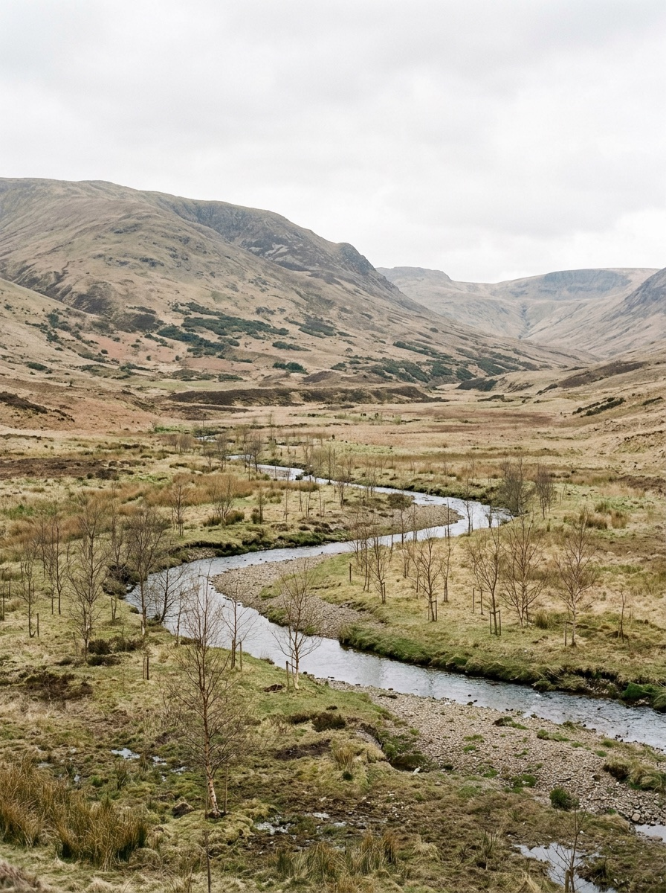

Seam Transitions

Canopy
Native forest
Since 2011
(01) Rewilding
We bring native forest back to hills cleared long ago: seed gathered nearby, planted by volunteers, then left to grow wild.
-

Birch Hollow 2012
-

Upper Loch 2014
-

Rowan Ridge 2016
-

Red Pine Glen 2018
-

Seed Store 2021
-

Moss Burn 2024